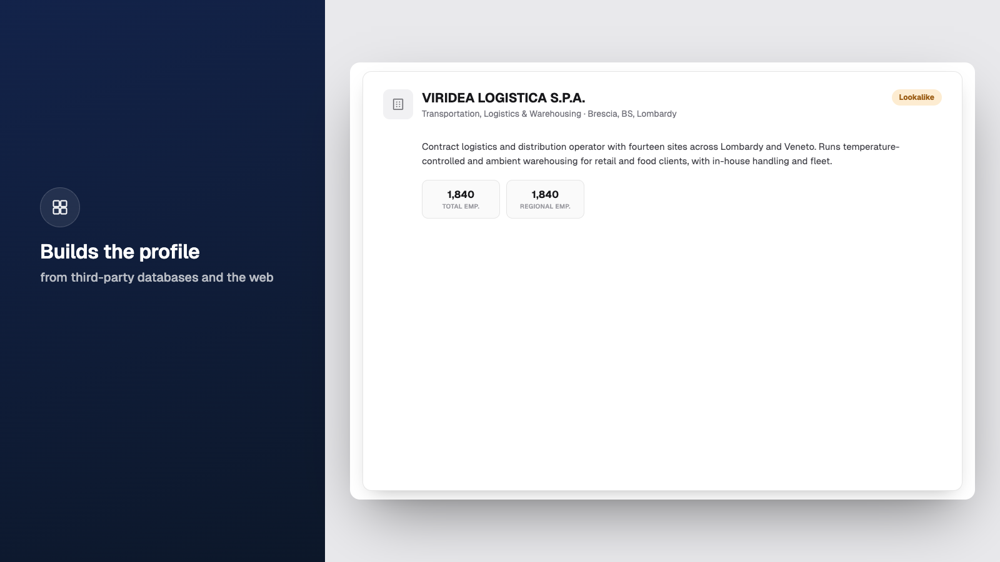
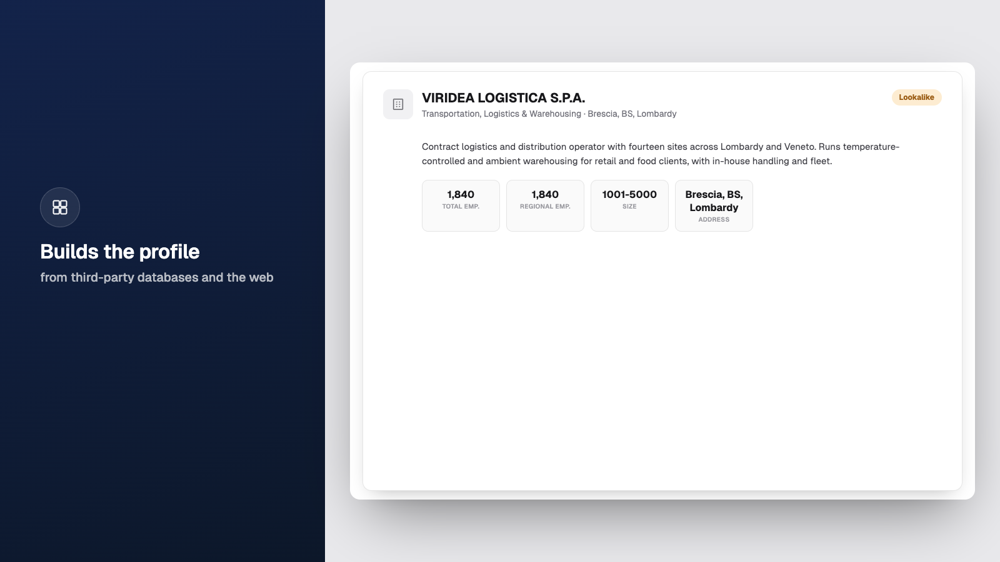
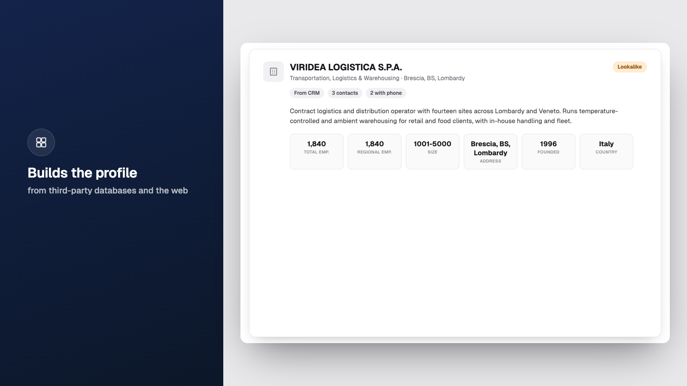
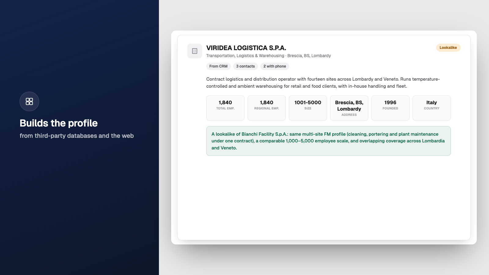
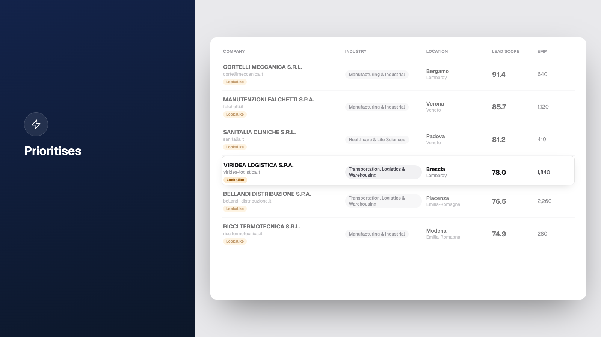
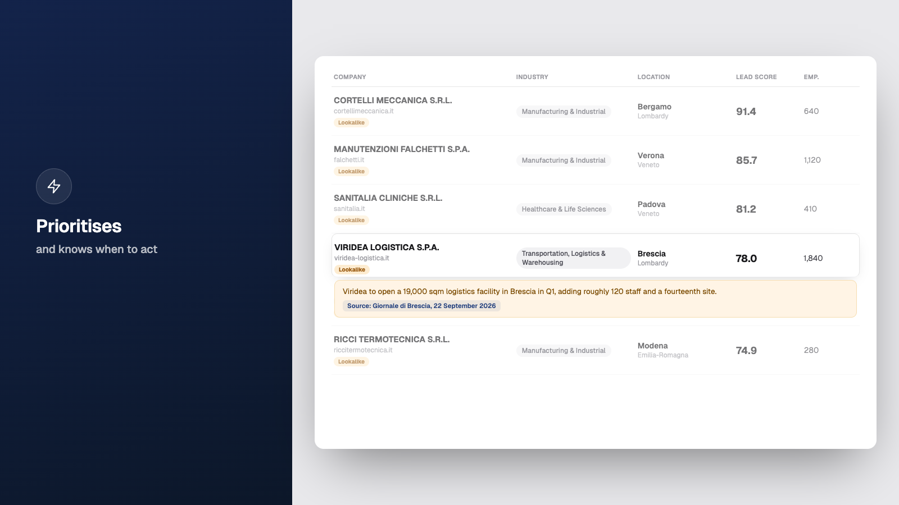

docs/STORY-APLUS.md (a renumbering: this covers what the old storyboard called "Beat 4," split into two — sourcing/enrichment, then prioritisation/scoring — plus the new stage layout). Click a frame, arrow keys to move, Escape to close. ← Finalized beats
Two things to know before comparing this against the "Finalized beats" grid:
Beat numbering here is STORY-APLUS.md's, not the old storyboard's — this is not a redo of the grid's old "Beat 4"/"Beat 5" cards (those are different content; the old "Beat 5, decision-makers" is STORY-APLUS's Beat 6 now). Left as its own card in the grid rather than overwriting those two, so nothing is mislabeled.
Built against docs/VISUAL-STYLE.md + docs/OVERLAY-RULES.md (docs/SCENE-SPEC.md, which STORY-APLUS.md points to, does not exist on disk) — i.e. the flat/no-gradient system, predates docs/VISUAL-REWORK.md's gradient/3D-card pivot. Uploaded as-is per Pushkar's call rather than holding for a restyle; expect this to get a visual-rework pass.
Stock voice (Kokoro af_heart) for timing only, pending Shrey — cue seconds are a word-count estimate, not a rendered duration (Kokoro's deps weren't available to render in-session). Company scores in the leads list were retuned from the live app's real values so Viridea lands at row 4 as specified — see docs/APLUS-4-5-NOTES.md in the main repo for the full list of open questions.
Beat 4 — Sourcing → one lookalike → enriched
"It brings together what the business already knows: past customer conversations, accounts that look like the ones it has already won, and leads the team adds along the way. Then it fills in the picture from third-party databases and the web."
Cards 1 and 3 fade; the lookalike grows into the stage — no converge

Enrichment: description + size pop in

Enrichment: revenue + sites pop in

Enrichment: region + chips pop in

Match-reason row appears beneath the stats — hold
Transition 4 → 5 (the one that must be smooth)

Transition: card shrinks into its row as the list reveals around it (~900ms, no cut). Left header swaps to Prioritises
Beat 5 — Prioritisation: the list, the score, the trigger
"Every account is scored, so the team always knows where to start. And when a buying signal appears, like a new site opening, the score moves and the account moves with it."
Leads list, top six rows sorted by score. Viridea row 4 (78.0), 100%; rest 60%

Buying-trigger note appears on Viridea's row
Score ticks 78.0 → 92.0, green ↑ 14
Row slides up past the three above it, lands at the top — hold